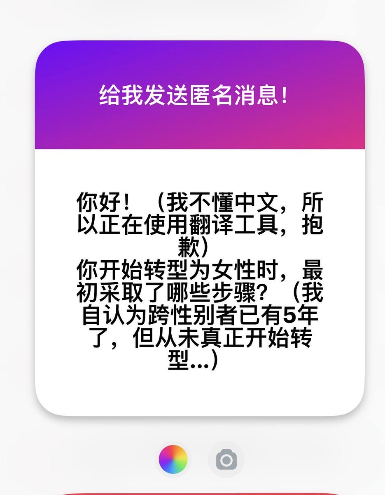

Rika☁️
@Rikka_Ela
@Natsumejuri 美丽夏小姐….

夏子
@Natsumejuri
首先是做一个好看的发型，适合自己的造型能显著提高pass度。我推荐是鬓发修到与下巴齐平的程度，可以掩盖脸部的缺陷又显得干净利落。别忘了打理头发，多研究扎头发的技术。
然后是增重，体脂率太低的话hrt效果会大打折扣，但是具体数据我没计算过，我身边统计学的话bmi不低于21-24比较合适。 https://t.co/BjGswhub74